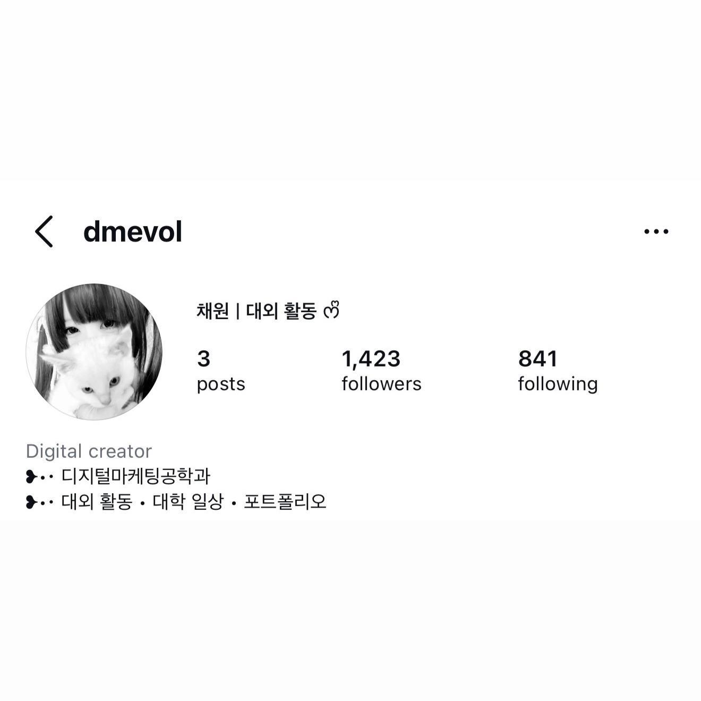
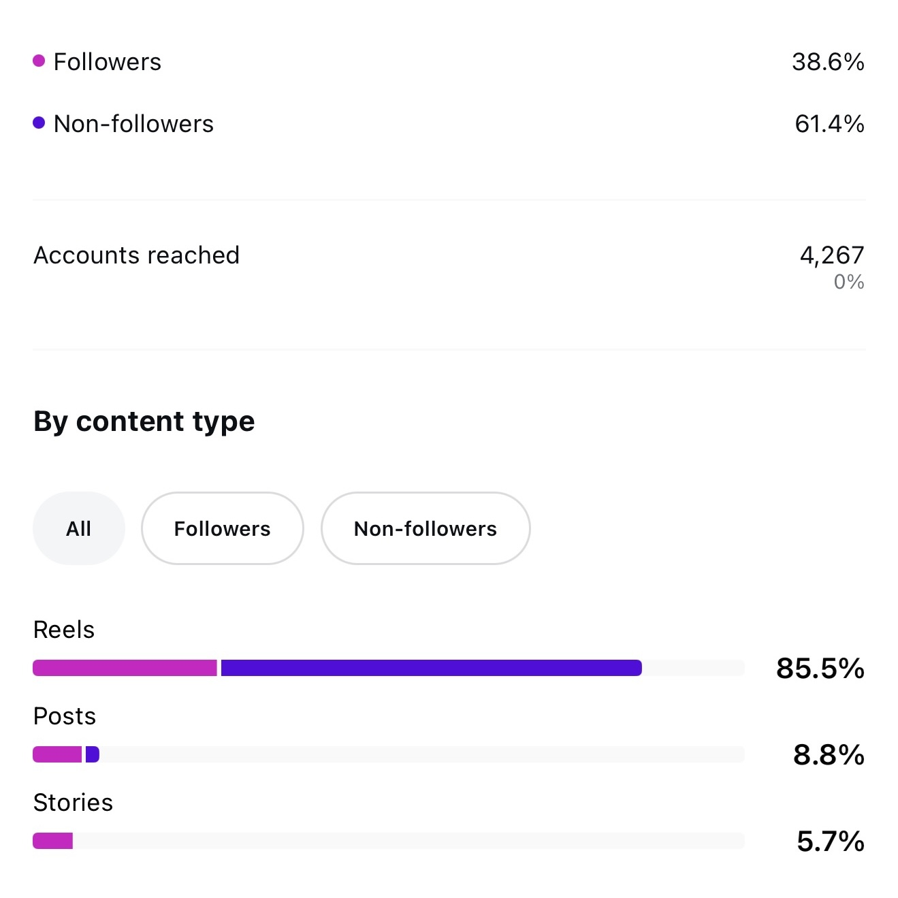
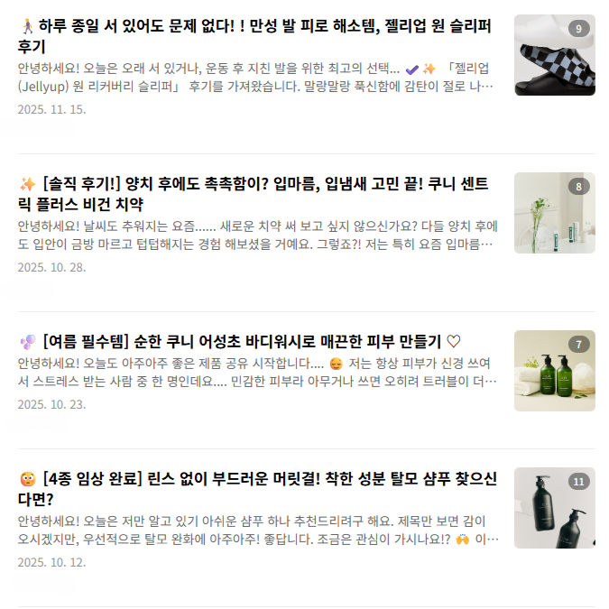
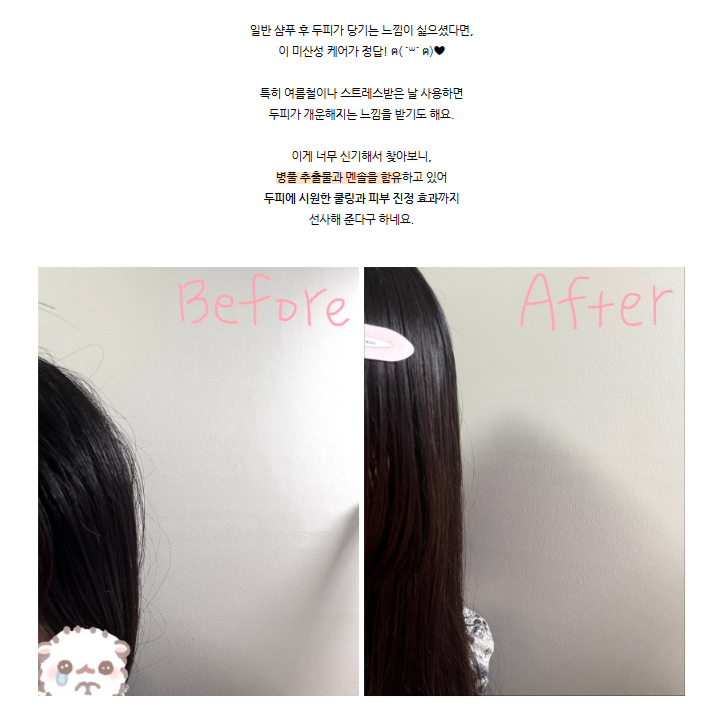

현재 인스타그램 대외 계정을 운영하며
약 1,400명의 팔로워를 확보하고,
지속적인 콘텐츠 성장과 유입을 이끌고 있습니다.
팔로워들과 소통하며 사람들이 어떤 트렌드에 반응하는지
직접 부딪히며 배웠습니다.
이 과정을 통해 사용자 관점에서
콘텐츠를 바라보는 시각을 기를 수 있었고,
사람들이 무엇에 흥미를 느끼고
어떤 요소에서 참여로 이어지는지를
오래 생각할 수 있게 되었습니다.
트렌드에 유연하게 대응하면서도,
사용자에게 매력적으로 다가갈 수 있는
콘텐츠를 기획하는 것을 강점을 지니고 있습니다.


산학협력 프로젝트를 통해
다양한 브랜드와 협업하여
블로그 콘텐츠를 제작하였습니다.
단순 후기 작성이 아닌,
제품의 특징과 강점을 효과적으로 전달할 수 있도록
콘텐츠 구조와 흐름을 설계하고,
검색 유입을 고려한 키워드 중심의 글을 작성했습니다.
특히 실제 사용 경험을 기반으로
사용자 관점에서 공감할 수 있는 스토리텔링을 구성하며,
자연스럽게 제품의 매력을 전달하는 데 집중했습니다.
이를 통해 정보 전달과
홍보 효과를 동시에 고려하는
콘텐츠 제작 역량을 키울 수 있었습니다.